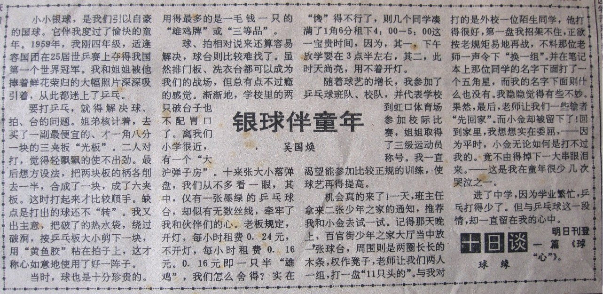

小小银球，是我们引以自豪的国球。它伴我度过了愉快的童年。1959年，我刚四年级，适逢容国团在25届世乒赛上夺得我国第一个世界冠军．我和姐姐被他捧着鲜花荣归的大幅照片深深吸引着，从此都迷上了乒乓。
要打乒乓，就得解决球、拍、台的问题。姐弟核计着，去买了一副最便宜的、才一角八分一块的三夹板“光板”，二人对打，觉得轻飘飘的使不出劲。最后想方设法，把两块板的柄各削去一半，合成了一块，成了六夹板。这时打起来才比较顺手。缺点是打出的球还不“转”。我又出主意，把破了的热水袋，绕过破洞，按乒乓板大小剪下一块，用“黄鱼胶”粘在拍子上，这才称心如意地使用了好一阵子。
当时，球也是十分珍贵的。用得最多的是一毛钱一只的“雄鸡牌”或“三等品”。
有一次，从虹口公园游玩，走回家时，已近黄昏。居然在四川路一家文具店橱窗里发现，
有 0.07元一只的“盾牌”乒乓球出售。比雄鸡牌还便宜，这可是个大好消息！
兴冲冲地回家。第二天大清早，就急匆匆地赶到商店。趴在橱窗上，再核实一下，却一下子傻了眼：原来 0.07中间的那个0，原本是1，由于前一天天色已晚，没有看清。我这时才恍然大悟，拍拍脑袋说：“ 盾牌 ”本来就要一毛钱的，怎么会这么便宜！
还是回家打我们的雄鸡牌去。
还有一次，我的雄鸡牌被人踩了，着实叫我伤心了一回。
学校每周组织到昆山公园劳动。劳动结束时，大家涌出公园门口，与我形影不离的雄鸡牌不慎从口袋里掉了出来，正好后面一个游客一脚踩上，这真是比踩在我身上还难受。
领队的是教我们地理的张明磊老师，见状轻轻的问我：“这球多少钱一个啊？”旁边的小伙伴抢着替我回答：“一角钱，对面烟纸店就有买的！”，他们接过老师手中的钱，飞快地去买来，把球塞在我手中，这时我才破涕为笑。以后，凡是张老师的地理课，我必定坐得特别恭正。
球、拍相对说来还算容易解决，球台则比较难找了．虽然排门板、洗衣台都可以成为我们的战场，但总有点不过瘾的感觉。渐渐地，学校里的两只破台子也不配胃口了。
离我们小学很近，有一个“大沪弹子房”。十来张大小落弹盘，我们从不多看一眼，其中，仅有一张墨绿的乒乓球台，却似有无数丝线，牵牢了我和伙伴们的心。
老板规定，开灯，每小时租费0.24元，不开灯，每小时租费0.16元。O．16元即一只半“雄鸡”，我们怎么舍得？实在“馋得不行了，则几个同学凑满了1角6分租下午4：00---5:00这一宝贵时间，因为，其一，下午放学要在3点半左右，其二，此时天尚亮，用不着开灯。
随着球艺的增长，我参加了乒乓球班队、校队，并代表学校到虹口体育场参加校际比赛，姐姐取得了三级运动员称号。
我一直渴望能参加比较正规的训练，使球艺再得提高。
机会真的来了！一天班主任拿来二张少年之家的通知，推荐我和小金去试一试。
记得那天晚上，百官街少年之家大厅当中放一张球台，周围则是两圈长长的木条，权作凳子，老师让我们两个人一组，打一盘“11只头的”。
与我对打的是外校一位陌生同学，他打得很好，第一盘我招架不住，正欲按老规矩易地再战，不料那位老师一声令下“换一组”。并在笔记本上那位同学的名字下面打了一个五角星，而我的名字下面则什么也没有。我隐隐觉得有些不妙。果然，最后，老师让我们一些输者“先回家”。而小金却被留下了！
回到家里，我想想实在委屈，——因为平时，小金无论如何是打不过我的。竟不由得掉下一大串眼泪来。——这是我在童年很少几次哭泣之一。
进了中学，因为学业繁忙，乒乓打得少了。但与乒乓球这一段情，却一直留在我心中。
(本文刊登在1992年5月12日《新民晚报》十日谈)
